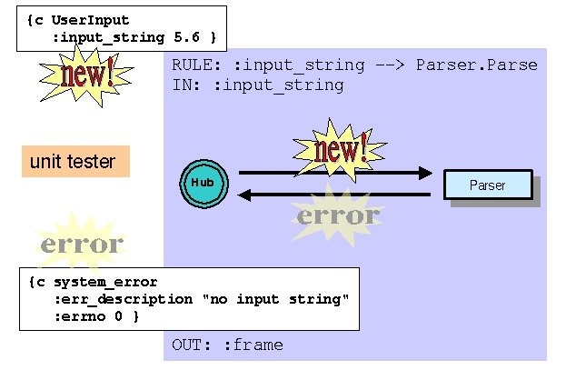
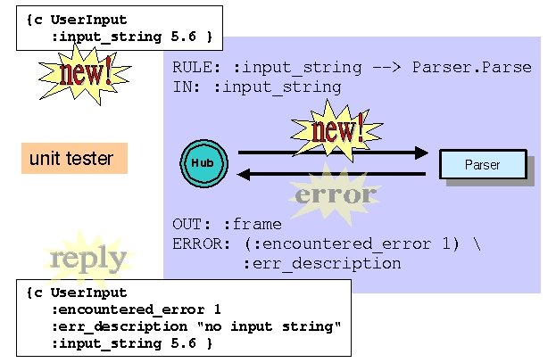

| License / Documentation home / Help and feedback |
So far, in almost all the examples we've run, everything has worked as expected. However, that's a very unrealistic assumption. Almost every programming language and distributed processing infrastructure has some facility for error handling, and the Galaxy Communicator infrastructure does as well. In this lesson, we'll learn how errors are handled.
Gal_Frame Parse(Gal_Frame frame, void *server_data);This argument, although represented as a void * for historical reasons, is actually a pointer to a call environment structure, of type GalSS_Environment. The call environment is the appropriate conduit for all communication with the Hub, since it embodies a good deal of contextual information which the communication requires, such as the current session, the connection through which to communicate, and the Hub program and rule which caused the dispatch function to be called.
The environment also keeps track of whether the Hub expects a response (which we saw we could control via Hub programs), and whether a response has been provided. So far, the only way we've seen to provide a response is by returning a frame from the dispatch function. You can also provide a normal message response using the function GalSS_EnvReply, which takes a call environment as an argument. So the Parse dispatch function we studied in the server basics lesson could have also been written as follows:
Gal_Frame Parse(Gal_Frame frame, void *server_data)Note that after we send the reply, we return NULL from the dispatch function. This isn't strictly necessary, because call environments will only send one response back to the Hub; any frame returned from this dispatch function would be ignored, since the response has already been sent.
{
/* Message decomposition */
char *input_string = Gal_GetString(frame, ":input_string");
ParseTree *p;
Gal_Frame reply;/* Core processing */
p = ParseSentence(input_string);/* Reply construction */
reply = Gal_MakeFrame("reply", GAL_CLAUSE);
Gal_SetProp(reply, ":frame",
Gal_FrameObject(ParseTreeToFrame(p)));
GalSS_EnvReply((GalSS_Environment *) server_data, reply);
return (Gal_Frame) NULL;
}
In most circumstances, there's no reason to use GalSS_EnvReply. However, it serves as a convenient introduction to call environments and explicit message returns. In particular, in addition to normal returns, we can also return errors. We'll explore this in the next section.
[Scrollable output history]
[Sending: new message]
{c UserInput
:input_string "I WANT TO FLY FROM BOSTON TO LOS ANGELES" }
[Received: error message]
{c system_error
:err_description "Function UserInput does not exist"
:errno 1 }
So one way to raise an error is to send a server a message it doesn't understand.
All errors in the Galaxy Communicator infrastructure originate in servers. In particular, errors are particular types of message responses. Most of these errors are signalled by the programmer from a dispatch function using the function GalSS_EnvError. This function, like GalSS_EnvReply, sends an explicit message return via a call environment.
So what sorts of errors might you want to report? You may recall that, for instance, we postponed the discussion of type checking when we discussed server basics; this was because in order to signal a type checking error, we needed to talk about environments first. So that's one type of error. In fact, we might encounter errors at any point in the dispatch function processing:
Gal_Frame Parse(Gal_Frame frame, void *server_data)Now let's use the process monitor to see some of these errors in action.
{
char *input_string;
ParseTree *p;
Gal_Frame reply;
Gal_Frame parse_frame;/* Deconstruction and type checking */
input_string = Gal_GetString(frame, ":input_string");
if (!input_string) {
GalSS_EnvError((GalSS_Environment *) server_data,
"no input string");
return (Gal_Frame) NULL;
}/* Core processing */
p = ParseSentence(input_string);/* Reply construction */
if (!p) {
GalSS_EnvError((GalSS_Environment *) server_data,
"no parse");
return (Gal_Frame) NULL;
}
parse_frame = ParseTreeToFrame(p);
if (!parse_frame) {
GalSS_EnvError((GalSS_Environment *) server_data,
"can't convert parse to frame");
return (Gal_Frame) NULL;
}
reply = Gal_MakeFrame("reply", GAL_CLAUSE);
Gal_SetProp(reply, ":frame", Gal_FrameObject(parse_frame));
return reply;
}
[Error handling exercise 1]Start the Parser and then the unit tester. Select "Send new message" in the unit tester window, select the first frame (the one with the :string key), press "Reply Required", and then press OK. You should see the following exchange in the interaction history pane:
Unix:
% process_monitor $GC_HOME/tutorial/errors/hub-error.config
Windows:
C:\> python %PM_DIR%\process_monitor.py %GC_HOME%\tutorial\errors\hub-error.config
[Interaction History pane](If you're adventurous, you'll discover that when the unit tester is acting as a Hub, you'll get a reply most of the time, whether or not you select "Reply Required". This is because in the current implementation, the server library forces a reply if a reply is required, but doesn't suppress a reply if a reply isn't required. This may change in a future release. If the unit tester is acting as a server, it will not get a reply if a reply isn't required.)[Sending: new message]
{c Parser.Parse
:string "I WANT TO FLY FROM BOSTON TO LOS ANGELES" }
[Received: error message]
{c system_error
:err_description "no input string"
:errno 0 }
Note that the error you get corresponds to the absence of an :input_string key. Next, select "Send new message" again, and select the second frame (the one with the float value for :input_string), press "Reply Required", and then OK. You'll now see the following exchange:
[Interaction History pane]The error is the same; this is because the :input_string key still doesn't contain a string. You should be able to match the error description to the argument to GalSS_EnvError, as follows:[Sending: new message]
{c Parser.Parse
:input_string 5.600000e+00 }
[Received: error message]
{c system_error
:err_description "no input string"
:errno 0 }
Finally, select "Send new message", select the third frame, press "Reply Required", and then OK. You'll now see the following exchange:
[Interaction History pane]This error corresponds to the parse failure.[Sending: new message]
{c Parser.Parse
:input_string "I WANT TO FLY TO LOS ANGELES" }
[Received: error message]
{c system_error
:err_description "no parse"
:errno 0 }
Select "File --> Quit" in the process monitor to conclude this example.
[Error handling exercise 2]Start the Parser, then the Hub, and finally the unit tester. The program we're running is the same simple program we used in the Hub basics lesson:
Unix:
% process_monitor $GC_HOME/tutorial/errors/server-error.config
Windows:
C:\> python %PM_DIR%\process_monitor.py %GC_HOME%\tutorial\errors\server-error.config
PROGRAM: UserInputWe're going to try two of the frames we tried in the last exercise. Select "Send new message", select the first frame, press "Reply required" and then OK. You'll see the following in the Hub pane:RULE: :input_string --> Parser.Parse
IN: :input_string
OUT: :frame
[Hub pane]So the Hub recognizes that the Parser server returned an error. It terminates the program (which was about to terminate anyway) and instead of sending the token state back to the unit tester as the reply, it sends the error:----------------[ 1]----------------------
{c UserInput
:input_string 5.600000e+00
:session_id "Default"
:tidx 1 }
--------------------------------------------Found operation for token 1: Parser.Parse
Serving message with token index 1 to provider for Parser @ localhost:10000
---- Serve(Parser@localhost:10000, token 1 op_name Parse)
Got error from provider for Parser @ localhost:10000: token 1
{c system_error
:errno 0
:err_description "no input string"
:session_id "Default"
:tidx 1 }
Done with token 1 --> returning to owner UI@<remote>:-1
Destroying token 1
[Interaction History pane]Here's an illustration of the process:[Sending: new message]
{c UserInput
:input_string 5.600000e+00 }
[Received: error message]
{c system_error
:session_id "Default"
:err_description "no input string"
:errno 0 }

If you press "Send new message" again, select the second frame, press "Reply required" and then OK, you'll see the analogous behavior with the "no parse" error description as a result.
Select "File --> Quit" to end this exercise.
PROGRAM: UserInputThe interpretation of OUT: and ERROR: are almost identical: they have the same source (message) and target (token) namespaces, and they're processed after the message return. The difference is that OUT: is evaluated when there's a normal reply, and ERROR: is evaluated when there's an error reply. If ERROR: is present, it also serves to "catch" the error; the program doesn't terminate, but rather proceeds normally. We expect, then, that if we redo the last exercise, the unit tester will receive a normal message reply. So let's check that.RULE: :input_string --> Parser.Parse
IN: :input_string
OUT: :frame
ERROR: (:encountered_error 1) :err_description
[Error handling exercise 3]As before, start the Parser, Hub and unit tester. Select "Send new message", select the first frame, press "Reply required" and then OK. You'll see the following in the Hub pane:
Unix:
% process_monitor $GC_HOME/tutorial/errors/catch-server-error.config
Windows:
C:\> python %PM_DIR%\process_monitor.py %GC_HOME%\tutorial\errors\catch-server-error.config
[Hub pane]So in this case, the Hub printed the resulting token state (which it does at every normal step in a Hub program). The token state is returned to the unit tester:----------------[ 1]----------------------
{c UserInput
:input_string 5.600000e+00
:session_id "Default"
:tidx 1 }
--------------------------------------------
Found operation for token 1: Parser.Parse
Serving message with token index 1 to provider for Parser @ localhost:10000
---- Serve(Parser@localhost:10000, token 1 op_name Parse)
Got error from provider for Parser @ localhost:10000: token 1
{c system_error
:errno 0
:err_description "no input string"
:session_id "Default"
:tidx 1 }
----------------[ 1]----------------------
{c UserInput
:input_string 5.600000e+00
:session_id "Default"
:tidx 1
:encountered_error 1
:err_description "no input string" }
--------------------------------------------
Done with token 1 --> returning to owner UI@<remote>:-1
Destroying token 1
[Interaction History pane]Note that the unit tester states that it received a normal reply, rather than an error. Note also that as in other normal replies, the name of the reply frame is identical to the original message sent, and the original contents of the message are preserved in the message reply. Finally, the ERROR: directive entry has updated the token state with a setting for :encountered_error and for :err_description. Here's an illustration of the process:[Sending: new message]
{c UserInput
:input_string 5.600000e+00 }
[Received: reply message]
{c UserInput
:encountered_error 1
:session_id "Default"
:err_description "no input string"
:input_string 5.600000e+00 }

If you're curious, you can confirm this behavior by sending a second new message.
Select "File --> Quit" to end this exercise.
Next: Sending new messages to the Hub
| License / Documentation home / Help and feedback |